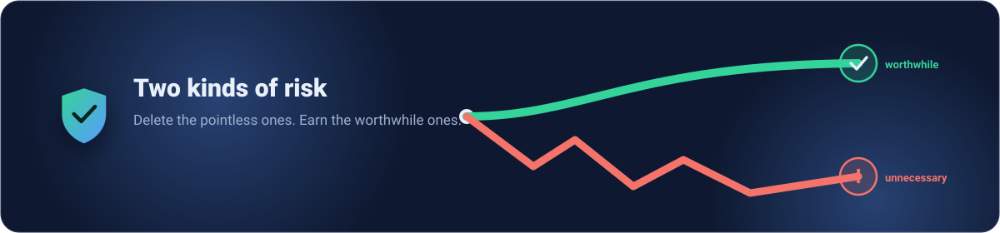

A life with fewer regrets, not fewer adventures.
I like structure and I hate paying for risks that give nothing back. This is the whole idea, written plainly.

I'm not a fanatic. I take real risks on purpose. I just refuse to take the ones that cost a lot and hand me nothing in return — the risks we accept out of laziness, habit, or simply not knowing better.
The core idea
Most people sort risks into "scary" and "fine." That's the wrong axis. The right question is a trade: what do I gain, what could I lose, and how much of the danger can I actually control?
Answer those three honestly and almost every decision falls into one of four buckets.
The four kinds of risk
Free Lunch
Big benefit, almost no danger. The decision is a gift — take it every time.
Wearing a seatbelt · smoke alarms · backing up your data · sunscreen.
Worthwhile Risk
Real danger, but real reward — and you can control most of the danger. Don't avoid it; earn it.
Scuba diving · climbing · riding with full gear · starting a business.
Unnecessary Risk
Real danger bolted onto almost no benefit. You suffer fully in the bad case and gain nothing in the good case.
No seatbelt · texting while driving · skipping the helmet · "just one more drink."
Reckless Risk
The danger is severe and you can't meaningfully control it. No amount of thrill makes the maths work.
Drunk driving · ignoring weather warnings · speeding in traffic.
The asymmetry that runs everything
The seatbelt is the anchor of this whole philosophy because the trade is so lopsided. The comfort of skipping it rounds to zero. The cost in a crash is permanent. When the downside is irreversible and the upside is a feeling, the answer is never "it depends."
But don't shrink your life
Safety-first is not "do nothing." A life spent avoiding all risk is its own kind of loss. Diving, riding, climbing, building — these carry real danger and pay it back in joy, growth and meaning. The goal isn't to refuse them. It's to earn them: get the skill, get the gear, respect the rules, and turn a scary risk into a controlled one.
Done right, diving is safe. Skipping your seatbelt never is — in a crash, you always suffer for it.
From feeling to number
Gut feeling is a bad accountant. So the philosophy comes with a tool: three metrics, ten stars each — Benefit, Raw Risk, and Mitigation. Score those three and the verdict falls out of the same rule every time, for everyone. No fanaticism, no vibes — just a consistent way to see the trade.
Then act
Insight that stays in your head changes nothing. Every risk review on this site ends with an action plan — a few concrete steps you can take today. That's the point: not to admire the analysis, but to quietly remove the dumb risks and properly equip yourself for the good ones.
Put it to work
Score a real decision you're facing right now, or read how others come out.